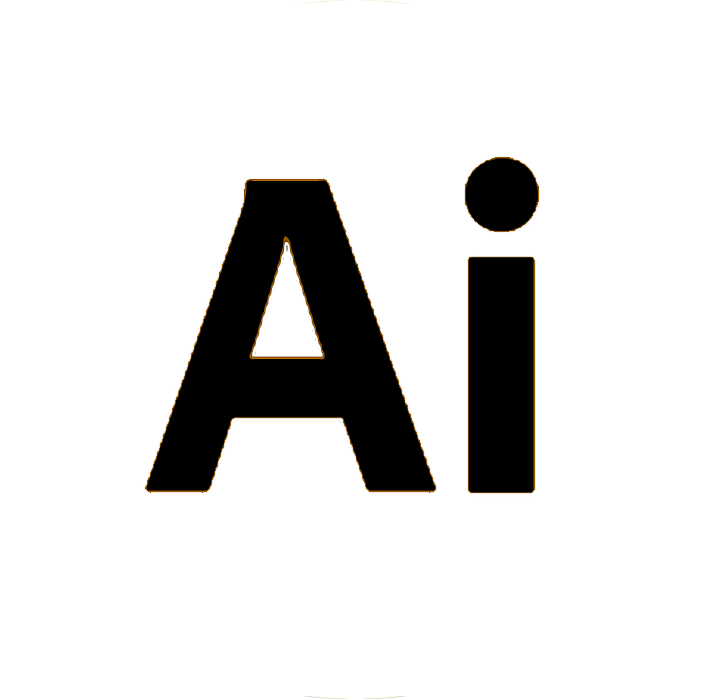
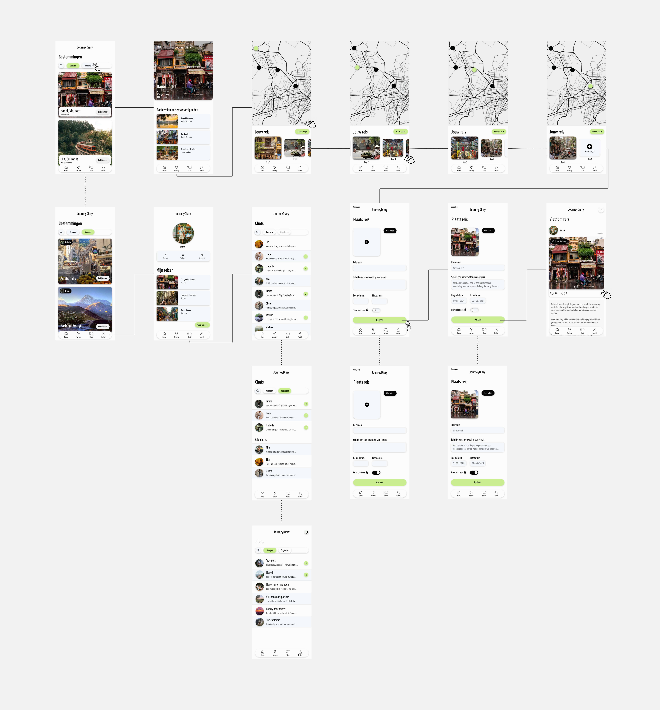

Skills
-
Adobe XD

-
Adobe Illustrator

-
Concept
Travel Journey helpt reizigers hun ervaringen vast te leggen en te organiseren, zodat ze geen waardevolle herinneringen kwijtraken. Veel mensen vergeten hun avonturen te documenteren of raken hun foto's en verhalen kwijt in de chaos van reisdocumenten. De app biedt een oplossing door reisfoto's en verhalen overzichtelijk op te slaan in een digitaal reisdagboek. Via een kaartweergave zie je bezochte locaties en kun je bij elke foto notities toevoegen om je herinneringen levendig te houden. Daarnaast kun je gemakkelijk je avonturen delen via sociale media. De app richt zich op reizigers van alle leeftijden en achtergronden die hun herinneringen willen vastleggen en delen op een gestructureerde en leuke manier.
-

Wireflow
Na onderzoek te hebben gedaan naar de gebruikers ben ik begonnen met het maken van wireframes, waarbij ik altijd rekening hield met hun wensen. Hierdoor kon ik belangrijke functies in het ontwerp verwerken, zoals een reisdagboek waarin gebruikers hun foto's en verhalen van hun reizen kunnen opslaan en gemakkelijk terugvinden. De app toont ook een kaart met alle bezochte locaties, en gebruikers kunnen notities aan hun foto's toevoegen om hun ervaringen beter te onthouden. Daarnaast kunnen reizigers hun avonturen delen op sociale media en anderen uitnodigen om mee te genieten. Om een duidelijker beeld te krijgen van de flow van de app, heb ik een wireflow opgesteld die meer inzicht biedt in het gebruik van de app.
-

-
Resultaat
Voor een extra leuke gebruikers interface en ervaring heb ik nog een animatie toegevoegd wanneer je de app opent. Het eindresultaat voldoet aan de gebruikerseisen en heeft een overzichtelijke interface, waardoor het makkelijk te begrijpen is voor de doelgroep.